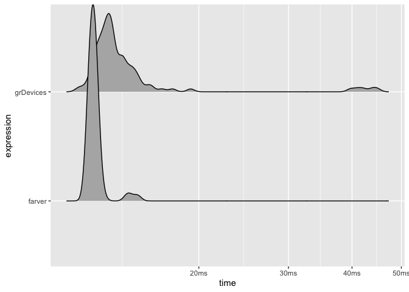
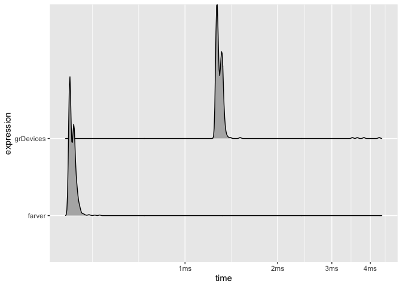

The goal of farver is to provide very fast, vectorised functions for conversion of colours between different colour spaces, colour comparisons (distance between colours), encoding/decoding, and channel manipulation in colour strings. To this end it provides an interface to a modified version of the ColorSpace C++ library developed by Berendea Nicolae.
Installation
farver can be installed from CRAN using install.packages('farver'). The development version can be installed from Github using devtools:
# install.packages('devtools')
devtools::install_github('thomasp85/farver')Use
farver provides an alternative to the grDevices::rgb() and grDevices::col2rgb() for encoding and decoding colours strings. The farver functions are superficially equivalent but provides a uniform output format, and the option to encode and decode directly from/to other colour spaces.
library(farver)
codes <- rainbow(10)
codes
#> [1] "#FF0000" "#FF9900" "#CCFF00" "#33FF00" "#00FF66" "#00FFFF" "#0066FF"
#> [8] "#3300FF" "#CC00FF" "#FF0099"
spectrum <- decode_colour(codes)
spectrum
#> r g b
#> [1,] 255 0 0
#> [2,] 255 153 0
#> [3,] 204 255 0
#> [4,] 51 255 0
#> [5,] 0 255 102
#> [6,] 0 255 255
#> [7,] 0 102 255
#> [8,] 51 0 255
#> [9,] 204 0 255
#> [10,] 255 0 153
encode_colour(spectrum)
#> [1] "#FF0000" "#FF9900" "#CCFF00" "#33FF00" "#00FF66" "#00FFFF" "#0066FF"
#> [8] "#3300FF" "#CC00FF" "#FF0099"It also provides an alternative to grDevices::convertColor() to switch between colours spaces. If the origin is a colour string it is possible to decode directly into the given colour space. Conversely, if the endpoint is a colour string it is also possible to encode directly from a given colour space.
spectrum_lab <- convert_colour(spectrum, 'rgb', 'lab')
spectrum_lab
#> l a b
#> [1,] 53.24079 80.09246 67.203197
#> [2,] 72.26072 30.16539 77.224482
#> [3,] 93.60533 -41.94504 90.274226
#> [4,] 88.07403 -83.10813 83.593379
#> [5,] 88.19634 -80.27943 57.926987
#> [6,] 91.11322 -48.08753 -14.131186
#> [7,] 47.90478 35.19678 -82.006104
#> [8,] 33.81896 79.70044 -105.279006
#> [9,] 51.90416 90.99470 -74.834222
#> [10,] 55.65103 86.52861 -9.719051
decode_colour(codes, to = 'lab')
#> l a b
#> [1,] 53.24079 80.09246 67.203197
#> [2,] 72.26072 30.16539 77.224482
#> [3,] 93.60533 -41.94504 90.274226
#> [4,] 88.07403 -83.10813 83.593379
#> [5,] 88.19634 -80.27943 57.926987
#> [6,] 91.11322 -48.08753 -14.131186
#> [7,] 47.90478 35.19678 -82.006104
#> [8,] 33.81896 79.70044 -105.279006
#> [9,] 51.90416 90.99470 -74.834222
#> [10,] 55.65103 86.52861 -9.719051
encode_colour(spectrum_lab, from = 'lab')
#> [1] "#FF0000" "#FF9900" "#CCFF00" "#33FF00" "#00FF66" "#00FFFF" "#0066FF"
#> [8] "#3300FF" "#CC00FF" "#FF0099"If colours are given as strings, manipulation of channels will normally require decoding, conversion to the correct colour space, manipulation of the given channel, converting back to rgb and the encoding to string. farver provides a range of functions that allow you to change any channel in the supported spaces directly in colour strings:
# Add a value to the channel
add_to_channel(codes, channel = 'l', value = 1:10, space = 'lab')
#> [1] "#FF0C03" "#FF9E0E" "#D5FF1C" "#48FF20" "#33FF74" "#3CFFFF" "#3D77FF"
#> [8] "#5A25FF" "#E839FF" "#FF41B4"
# Set a channel to a specific value
set_channel(codes, 'alpha', c(0.3, 0.7))
#> [1] "#FF00004C" "#FF9900B2" "#CCFF004C" "#33FF00B2" "#00FF664C" "#00FFFFB2"
#> [7] "#0066FF4C" "#3300FFB2" "#CC00FF4C" "#FF0099B2"
# Limit a channel to a given value
cap_channel(codes, 'r', 200)
#> [1] "#C80000" "#C89900" "#C8FF00" "#33FF00" "#00FF66" "#00FFFF" "#0066FF"
#> [8] "#3300FF" "#C800FF" "#C80099"Lastly, farver also provides utilities for calculating the distance between colours, based on a range of different measures
spectrum2 <- t(col2rgb(heat.colors(10)))
compare_colour(spectrum, spectrum2, 'rgb', method = 'cie2000')[1:6, 1:6]
#> [,1] [,2] [,3] [,4] [,5] [,6]
#> [1,] 0.00000 1.95065 7.130898 15.53837 27.08237 39.88958
#> [2,] 29.50083 27.56585 22.402612 13.98117 2.41602 10.31341
#> [3,] 72.33606 70.32974 64.926436 55.98592 43.59987 30.24747
#> [4,] 85.84698 83.68842 77.854648 68.19997 55.06314 41.59064
#> [5,] 85.92110 83.79762 78.073545 68.67184 56.07682 43.42965
#> [6,] 70.95853 69.55274 65.907013 60.35739 53.72218 47.94387Supported colour spaces
farver currently supports the following colour spaces:
- CMY
- CMYK
- HSL
- HSB
- HSV
- CIE L*AB
- Hunter LAB
- OK LAB
- LCH(ab)
- LCH(uv)
- LCH(OK)
- LUV
- RGB
- XYZ
- YXY
Supported distance measures
farver supports the following colour distance metrics
- Euclidean
- CIE1976
- CIE94
- CIE2000
- CMC
White References
farver allows you to set the white point for relative colour spaces, either based on a standard illuminant (A-F series supported) or by specifying chromaticity coordinates or tristimulus values directly
Benchmark
farver is faster than its grDevices counterpart but less so than it was at its first release, as the colour conversion in grDevices has been improved since.
library(ggplot2)
test <- matrix(runif(300000, min = 0, max = 255), ncol = 3)
timing <- bench::mark(
farver = convert_colour(test, 'rgb', 'lab'),
grDevices = convertColor(test, 'sRGB', 'Lab', scale.in = 255),
check = FALSE,
min_iterations = 100
)
#> Warning: Some expressions had a GC in every iteration; so filtering is disabled.
plot(timing, type = 'ridge')
Still, if the start- and/or endpoint are colour strings the ability to decode and encode directly from/to any colour space will give a huge speed up.
colour_strings <- colours()
timing <- bench::mark(
farver = decode_colour(colour_strings, to = 'lab'),
grDevices = convertColor(t(col2rgb(colour_strings)), 'sRGB', 'Lab', scale.in = 255),
check = FALSE,
min_iterations = 100
)
plot(timing, type = 'ridge')
Code of Conduct
Please note that the ‘farver’ project is released with a Contributor Code of Conduct. By contributing to this project, you agree to abide by its terms.